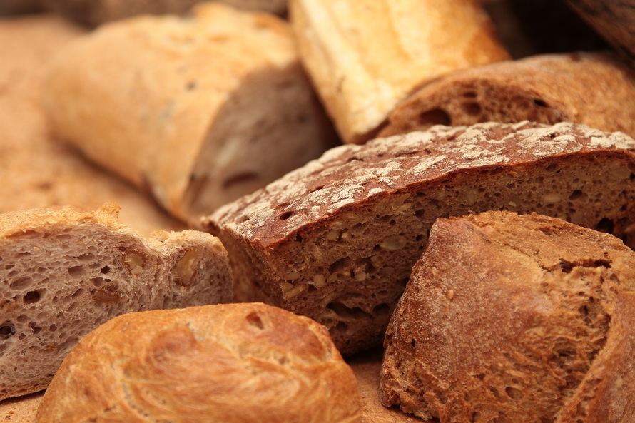
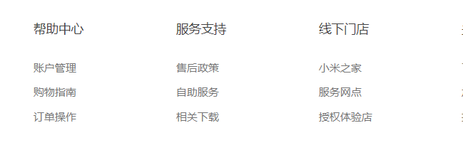

春眠不觉晓，处处闻啼鸟。夜来风雨声，花落知多少。
春来发几枝，愿君多采撷。
段落
段落
段落
段落
段落

下面是用dl标签的一个示范：

| 部门 | 姓名 | 性别 | 工资 |
|---|---|---|---|
| 开发组 | 小明 | 男 | 10000 |
| 开发组 | 小明明 | 男 | 10000 |
| 开发组 | 小小明 | 男 | 10000 |
| 部门 | 姓名 | 性别 | 工资 |
|---|---|---|---|
| 开发组 | 小明 | 男 | 10000 |
| 小明明 | 男 | 10000 | |
| 小小明 | 男 | 10000 | |
| 工资合计 | 30000 | ||